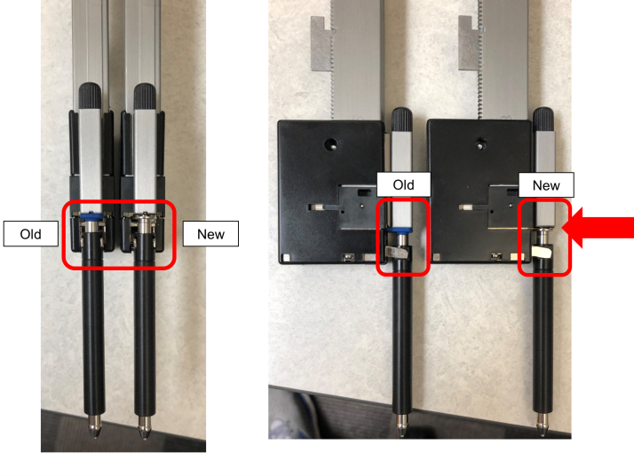
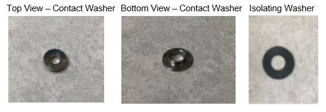
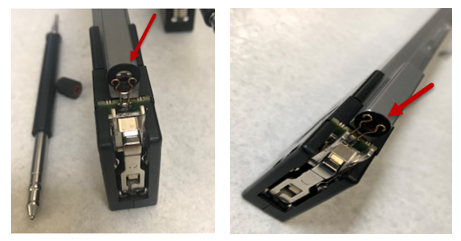
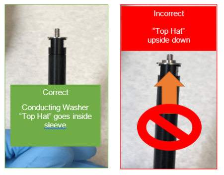
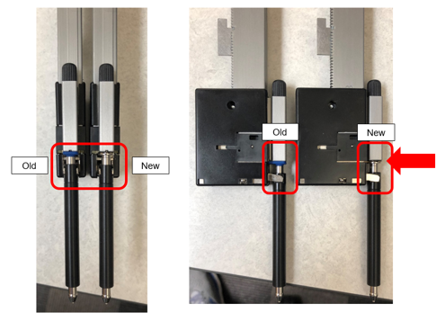
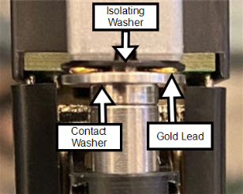
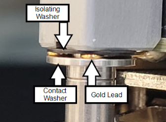

Pipettor cLLD Washer Installation
Purpose
This procedure introduces a new Pipettor capacitive washer set that requires installation on all Pipettors.
What is Affected
It has been observed that on some occasions, the Pipettor’s capacitive circuit connection is intermittent and results in incorrect liquid level detection. Replacing the capacitive circuit isolation boot with new washers improves the capacitive circuit connection.
Replace the isolation boot with  new washers for ALL the Pipettors on the System.
new washers for ALL the Pipettors on the System.
- Panther – Sample Pipettor, Reagent Pipettor
- Fusion – Pipettor

Parts and Materials Required
- Proper Protective Equipment
-
 cLLD Capacitive liquid level detection Contact, Pipettor, Upgrade Kit (Set Of 12). Contains: 1 bag of 12 Contact Washers and 1 bag of 12 Isolating Washers
cLLD Capacitive liquid level detection Contact, Pipettor, Upgrade Kit (Set Of 12). Contains: 1 bag of 12 Contact Washers and 1 bag of 12 Isolating Washers

Time Required
- Panther (Sample and Reagent) – Total 40 min (Procedure 20min + Verification 20min)
- Fusion (Fusion Pipettor) –Total 20 min (Procedure 10min + Verification 10min)
Procedure
-
Begin by performing the Pipettor DiTi Cleaning procedure for ALL the Pipettors on the System (Sample Pipettor, Reagent Pipettor & Fusion Pipettor (if Fusion is installed)). If needed, see Pipettor DiTi Cleaning for the detailed procedure.
-
After Step 8 in the Pipettor DiTi Cleaning (cleaning the cLLD contact):
-
Install the
new cLLD isolating washer. DO NOT re-install the Silicone Boot.
-
-
Discard the old silicone isolation boot(s) as per Lab Guidelines.
-
Continue to steps 9-12 in the Pipettor DiTi Cleaning to re-assemble with the new cLLD Washers.




-
Verification
-
Re-teach the pipettors to the instrument reference point and pipettor eject locations ONLY.
-
Eject Chutes (Sample and Reagent) and/or Tip Carousel (if Waste-on-the-Fly is installed) on Panther
-
Centrifuge Loading position and the Pipettor Eject Chute on Fusion
- The vertical assembly length of the DiTi and conductive washer is slightly more than the old configuration. Teaching is necessary to resolve the difference in length of the DiTi relative to the home flag and to maintain the vertical distance of the Eject Lever to the Eject locations.
- Complete a Pipettor Pressure Integrity Test for ALL Pipettors.
- Perform 12 capacitive detections at a location appropriate per arm.
Eject locations include the following locations:
Transfer coordinates and exit.
If needed, refer to Pipettor Pressure Integrity Test.
If needed, refer to Pipettor cLLD & bLLD Test Procedure.
Note: If performing in conjunction with a PM or system installation, the PQ Performance Qualification can be used in lieu of the cLLD testing.
Performance Qualification can be used in lieu of the cLLD testing.
 button at the top of the page to send feedback, comments, or change requests.
button at the top of the page to send feedback, comments, or change requests.